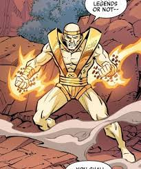

Sise - Ace
who is depicted as an elderly sorcerer with a wise and mystical appearance. This character is often seen wearing traditional sorcerer's attire, including a flowing cloak, mystical symbols, and various accessories associated with magic and sorcery.
His long white hair and beard add to the mystique and wisdom associated with the character, emphasizing his mastery of the mystical arts.
This description suggests that Sise-Ace is a classic archetype of a wise and powerful wizard or sorcerer often found in fantasy literature and media.
- Sise-Ace is typically depicted as an elderly man with long white hair and a long white beard. His aged appearance adds to the mystique and wisdom associated with the character
- Sise-Ace is often seen wearing traditional sorcerer's robes and attire, which include a flowing cloak, mystical symbols, and various accessories associated with magic and sorcery. His attire reflects his mastery of the mystical arts
- Sise-Ace is known for wielding various mystical implements and artifacts, such as a staff or wand, which he uses to channel his magical powers. These objects often have intricate designs and are integral to his abilities as a powerful sorcerer

LINK TO INDEX